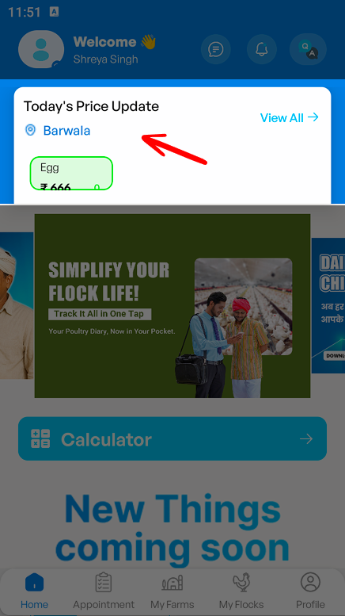

👋
Welcome to your UX audit! Use your keyboard arrows to navigate through the case study.

🫡
I finished initial onboarding, landed on this home page
and oh...
and oh...

😵💫
...what am i looking at??

🤔
So all things are connected to my farm... not me.

😶
1. But personalization is around me?


😶
2. Prices are based on my farm's location, I think...?

😶
4. If I look at frequency,
- farms: once
- flocks: every day
- appointments: once a week/month (irregular)
- my profile: not at all.
- farms: once
- flocks: every day
- appointments: once a week/month (irregular)
- my profile: not at all.
💡
🤔
— so everything exists, but there's no clear hierarchy.
Let's fix it!
Let's fix it!
Redesign
✅
Voila!

💡

💪
Now, time to clean up rest of the dashboard!

🤔
Wow, that's specific...

🤨
... and is the 'From-To' date period even needed when there's already a toggle (except when its Custom)?
💡
Intent over facts
#UX PRO TIP
People don't want facts, they want their intent understood. Don't provide them buttons and texts, provide them ready-made solutions based on what they want.
- "Last 7 days" instead of "Week"
- "Last 30 days" instead of "Month"
- "Financial quarter" instead of "Billing cycle"
Maybe something like this?


🤔
Before updating the UI... I wonder what's inside filters?

😵
Oh, channel filters. Why is it buried inside though?

🚨
Also,
1. Are the zero values because of no channel or no data?
2.The strong CTAs are conflicting with the primary action!
1. Are the zero values because of no channel or no data?
2.The strong CTAs are conflicting with the primary action!
Redesign

✅
*TADA* there we go - much better!
🤔
Something still feels off..

🤨
Is this to personalize the experience? But why am I the only focus?

😕
I remember setting up my brand during onboarding... but I don't see it mentioned anywhere.

😅
*after 5 mins* Oh! I found it —

😶
Umm wait, what's profile??

😵💫
Workspace?? This is confusing!

🤔
There are 3 levels of navigation
1. Brand level
2. Global level
3. Sub-navigation
1. Brand level
2. Global level
3. Sub-navigation

🥸
A quick fix - move brand level above user level, as user is secondary.

😅
But the user settings sits awkwardly...

🤔
... and do we really need Spur's branding at this point?
Redesign

🤌
what if... *chef's kiss*

😍
Personalized dashboard with a separate settings and user profile.
1. Clear brand level
2. Cleaner global navigation
1. Clear brand level
2. Cleaner global navigation
😌
All good to go!

😵💫
[BONUS] The sub-navigation is sooo overwhelming!
Redesign

😍
Why not categorize them without user having to do it mentally?

😌
Audit complete!